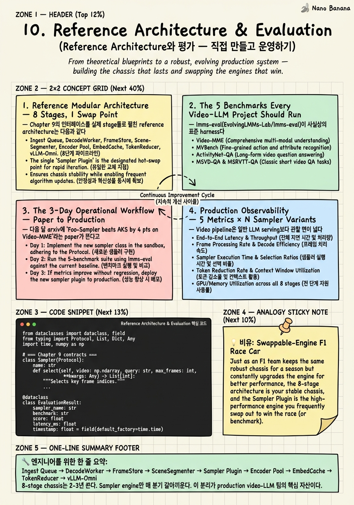

Reference Architecture & Evaluation

🎯 학습 목표
- Chapter 9의 interface를 사용해 8-stage reference architecture를 직접 설계할 수 있다
- 5대 video-LLM benchmark가 각각 무엇을 측정하는지, 언제 skip할 수 있는지 판단할 수 있다
- lmms-eval harness로 sampler variant를 비교 평가하는 워크플로우를 구축할 수 있다
- arxiv에 SOTA paper가 뜬 시점부터 production rollout까지 3일짜리 평가 사이클을 운영할 수 있다
- 비디오 파이프라인의 production observability metric 5종을 sampler-variant 단위로 트래킹할 수 있다
- 2026 하반기 agentic sampler와 joint sampler-MLLM evolution이 무엇을 바꿀지 평가하고 어디에 베팅할지 판단할 수 있다
마지막 chapter. 지금까지 Chapter 1에서 frame sampling이 진짜 bottleneck이라는 thesis를 세웠고, Chapter 2-7에서 uniform부터 AKS/BOLT, Frame-Voyager, AdaRD-Key/FOCUS, LongVU, VideoChat-Flash까지 SOTA 가족을 살펴봤고, Chapter 8에서 commercial 현실(Gemini/Twelve Labs/Qwen-VL이 여전히 uniform)을 직시했고, Chapter 9에서 plug-and-play architecture의 계약을 정의했다. 이번 chapter는 capstone이다 — 그 모든 것을 실제 동작하는 reference architecture 하나로 묶고, lmms-eval로 평가하고, 다음 달 arxiv에 뜰 paper를 어떻게 3일 안에 평가-rollout할지 운영 워크플로우까지 설계한다. 비유는 명확하다: chassis는 그대로, engine은 매 시즌 갈아끼우는 F1 race car. Telemetry stays the same. 마지막 절에서는 2026 하반기 agentic sampler(FrameMind, FrameThinker, A.I.R.)와 joint sampler-MLLM evolution(MSJoE)이 어디로 가는지, 그리고 senior engineer로서 어디에 베팅해야 하는지 정리한다.
핵심 내용
1. Reference Modular Architecture — 8 Stages, 1 Swap Point
Chapter 9의 인터페이스를 실제 stage들로 펼친 reference architecture는 다음과 같다.
[Ingest Queue (Kafka/SQS)]
↓ video_id, url, query_id
[DecodeWorker (Decord + NVDEC)]
↓ ndarray[T,H,W,3], fps, duration
[FrameStore (S3 raw + Redis hot index)]
↓ frame handles, not pixels
[SceneSegmenter (PySceneDetect ContentDetector)]
↓ List[(t_start, t_end, shot_id)]
[Sampler Plugin] ← ★ swap point ★
↓ List[int] frame indices, len ≤ max_frames
[Encoder Pool (SigLIP-So400m / Marengo-3.0)]
↓ Tensor[N, D_v]
[EmbedCache (Redis vector + S3 cold)]
↓ cache key = (video_id, frame_idx, encoder_version)
[TokenReducer (SlowFast pooling / TokenMerge)]
↓ Tensor[N', D_v], N' ≤ token_budget
[LLM Serving (vLLM-Omni disaggregated)]
↓ answer string + telemetry
각 stage가 왜 그 자리에 있는가:
-
Ingest Queue: 비동기 백프레셔. DecodeWorker가 GPU-bound이므로 queue로 흡수해야 burst 트래픽에 안 죽는다. video_id를 idempotency key로.
-
DecodeWorker: Decord + NVDEC 하드웨어 가속. CPU 디코딩은 1080p에서 30fps 못 따라간다.
-
FrameStore (S3 + Redis): 디코딩한 raw pixel을 S3에 한 번만 저장하고 Redis에 hot index(video_id → S3 key list). 같은 영상에 대한 두 번째 query는 디코딩 skip.
-
SceneSegmenter: Chapter 2에서 본 PySceneDetect. Sampler보다 앞에 와야 한다 — anti-pattern #2(sampling before shot detection)를 피하기 위해. shot boundary는 sampler에게 anchor로 주어진다.
-
Sampler Plugin ★: Chapter 9의
Sampler.select()계약. uniform / AKS / BOLT / Frame-Voyager / AdaRD-Key / FOCUS / Agentic — config flag 하나로 바꾼다. -
Encoder Pool: SigLIP-So400m이 2026 기준 default. 멀티모달 검색이 함께라면 Twelve Labs Marengo-3.0(joint visual+audio+ASR+motion). pool화해서 batching 효율.
-
EmbedCache: 같은 (video_id, frame_idx, encoder_version) 조합은 한 번만 인코딩. cache hit rate가 production cost의 절반을 결정한다.
-
TokenReducer: Chapter 7의 SlowFast/TokenMerge/VideoChat-Flash HiCo. Sampling과 직교하는 축. 200 frame을 96 token으로 압축하는 일은 여기서.
-
vLLM-Omni: Chapter 9에서 본 disaggregated serving. encoder, sampler, LLM core를 독립 stage로 스케줄링, 91.4% JCT reduction.
Swap point가 하나라는 게 핵심이다. Sampler를 바꿀 때 SceneSegmenter, EmbedCache, vLLM-Omni 어느 것도 건드리지 않는다.
2. The 5 Benchmarks Every Video-LLM Project Should Run
lmms-eval(EvolvingLMMs-Lab/lmms-eval)이 사실상의 표준 harness다. video_decode_backend=decord, sampler를 config field로 받는다. 모든 새로운 sampler는 다음 5개로 측정한다.
-
Video-MME (Long split) — 30-60분 비디오 QA, multi-domain. 'Long video understanding의 종합검사'. 언제 돌리나: 모든 sampler. 언제 skip하나: never.
-
MLVU — 6분-2시간 비디오 multitask(plot QA, anomaly, temporal reasoning). 'Long video의 다양성'을 본다. 언제 돌리나: 모든 sampler. 언제 skip하나: Egocentric 전용 sampler면 우선순위 낮춤.
-
LongVideoBench — referring question(영상 속 특정 시점·객체를 가리키는 질문). 'Query-aware sampler의 진가'를 본다. AKS/BOLT/AdaRD-Key의 강점이 가장 잘 드러나는 곳. 언제 돌리나: query-aware sampler 평가 시 필수.
-
EgoSchema — long-form egocentric(1인칭) QA. 'Egocentric domain shift에 robust한가'를 본다. 언제 돌리나: AR/wearable/로보틱스 타겟.
-
Multi-Hop NIAH (VideoChat-Flash) — 10K-frame needle-in-haystack, 여러 시점에 흩어진 needle을 찾는다. 'Context length × token compression의 극한'을 본다. 언제 돌리나: 1시간+ 영상, hour-scale 시스템.
실전 팁: 처음에는 Video-MME Long + LongVideoBench 두 개만 돌려도 sampler의 신호가 충분히 나온다. MLVU/EgoSchema는 도메인 fit 검증용, Multi-Hop NIAH는 hour-scale claim 검증용으로 분리하는 게 cost-effective.
3. The 3-Day Operational Workflow — Paper to Production
다음 달 arxiv에 'Foo-Sampler beats AKS by 4 pts on Video-MME'라는 paper가 뜬다고 하자. 3일 안에 production-ready 평가가 끝나야 한다.
Day 0 (paper drops) — abstract + benchmark table 30분 스캔. 우리 도메인(긴 영상? query-aware?)에 fit하는지, 코드 공개인지 1차 게이트.
Day 1 — (a) Wrap as Sampler protocol. Chapter 9의 Sampler.select(video, query, max_frames) -> List[int] 계약으로 paper code를 어댑터로 감싼다. 보통 2-4시간.
Day 1 후반 — (b) Hold-out subset eval. Full benchmark는 비싸다. 우리가 미리 떼둔 200-sample hold-out(Video-MME Long 100 + LongVideoBench 100)으로 smoke test. lmms-eval --limit 200. 4-6시간.
Day 2 — (c) Cost-vs-quality 비교. 같은 hold-out에서 (i) accuracy, (ii) frame-selection-time, (iii) tokens/query, (iv) GPU-sec/query를 현재 production sampler와 나란히 표로. 'AKS 대비 +3.2 pts 정확도지만 frame-selection-time 4배'면 reject.
Day 2 후반 — (d) Feature-flag rollout 준비. 새 sampler를 sampler.variant=foo_sampler_v1로 등록. shadow mode부터 — production traffic의 5%에 두 sampler를 동시에 돌려서 답은 기존 것을 쓰되 metric만 양쪽 기록.
Day 3 — (e) 1% → 10% → 50% canary, monitor. sampler-variant별로 위에서 정의한 모든 production metric을 본다. p99 latency가 회귀하지 않고 quality proxy(thumbs-up rate, follow-up question rate)가 동등 이상이면 100%. 회귀하면 즉시 flag off.
3일이 빡빡해 보이지만, Chapter 9의 plug-and-play 계약이 있으면 이게 가능하다. 계약이 없으면 같은 작업이 2-3주짜리 프로젝트가 된다.
4. Production Observability — 5 Metrics × N Sampler Variants
Video pipeline은 일반 LLM serving보다 관찰 면이 넓다. 다음 5개를 per-sampler-variant로 트래킹한다. Prometheus 라벨 하나(sampler_variant)를 모든 metric에 박는 게 핵심.
-
tokens/query — 한 query에 LLM이 받는 vision token 수의 분포. Sampler가 token economics를 결정한다. p50/p95/max. 비용의 직접 proxy.
-
latency p50/p99 — end-to-end (ingest → answer). p99가 진실을 말한다. Sampler가 무거우면 p99에 먼저 나타난다.
-
frame-selection-time — Sampler 단계만의 wall-clock. AKS/AdaRD-Key는 max-volume 최적화로 인해 uniform 대비 50-200ms 더 걸린다.
-
encoder-utilization — SigLIP/Marengo GPU pool의 평균 utilization. 60% 미만이면 batching이 작거나 pool이 과대. 95%+면 saturated, capacity 추가 필요.
-
cache hit rate — EmbedCache의 hit/miss. production에서 같은 영상이 여러 query를 받으면 hit rate가 70%+가 되어야 한다.
선택 metric으로 answer-quality proxy — thumbs-up rate, follow-up question rate(나쁜 답일수록 follow-up 많음), task completion rate. Offline benchmark accuracy와 production quality는 완전히 같지 않다. 둘 다 본다.
Dashboard 단일 화면 원칙: 한 화면에 5 metric × 활성 sampler variant 전부. 'BOLT v1 vs AKS v2 vs foo_sampler_v1' 세 곡선이 같이 보여야 의사결정이 빠르다.
5. The Next 12 Months — Where to Bet
2026 6월 기준, 두 개의 큰 트렌드가 다음 SOTA 자리를 두고 다투고 있다.
(a) Agentic samplers — VLM 자신이 request_frames(t_start, t_end, fps) tool call을 chain-of-thought 중간에 발화하는 패턴.
- FrameThinker (arXiv:2509.24304) — 'Think → request frames → think again' 루프
- FrameMind (arXiv:2509.24008) — episodic memory + selective recall
- A.I.R. (arXiv:2510.04428) — Agentic Iterative Reasoning, 비용 인식형 toolcall 예산
장점: query 복잡도에 따라 frame budget을 dynamic하게. 단점: tool-call latency가 sequential이라 p99에 치명적. '16 frame vs 256 frame' 같은 단순 비교가 안 됨. 베팅 가이드: long-form interactive 제품(agent 식으로 사용자와 turn-taking)에는 베팅, batch QA API에는 보류.
(b) Joint sampler-MLLM evolution (MSJoE 계열) — sampler와 MLLM을 함께 학습. Chapter 4의 learned sampler가 frozen MLLM을 가정한 것과 달리, 이쪽은 양쪽을 같이 진화시킨다. 장점: plug-and-play 계약을 깨는 대신 end-to-end 최적해에 가까움. 단점: 본 강의의 swap-point 철학과 정면 충돌 — sampler를 바꾸려면 MLLM도 다시 학습. 베팅 가이드: in-house MLLM을 직접 보유한 팀(Google, Meta, OpenGVLab)에는 강력, 모델을 외부 API로 호출하는 팀에는 무관.
현실적 portfolio: production chassis는 우리 reference architecture 유지, sampler engine slot에 (1) 현재 베스트 training-free(2026 초 기준 AdaRD-Key/FOCUS 계열), (2) experiment slot에 agentic sampler 1종, (3) 모니터링 슬롯에 joint-evolution 동향. F1처럼, 시즌마다 engine을 교체하되 chassis는 5년 쓴다.
💡 비유로 이해하기
F1 팀은 매 시즌 engine을 갈아끼우지만, chassis(monocoque), suspension geometry, telemetry harness, pit-stop protocol은 그대로 둔다. Engineer가 새 engine을 wind tunnel에서 평가하는 표준 절차가 있고, 같은 telemetry로 lap time을 비교한다. 우리 video-LLM pipeline도 동일하다.
-
Chassis = Ingest Queue + DecodeWorker + FrameStore + SceneSegmenter + EmbedCache + TokenReducer + vLLM-Omni. 한 번 잘 만들면 2-3년 쓴다.
-
Engine = Sampler Plugin. AKS, BOLT, AdaRD-Key, FOCUS, FrameMind — 매 분기 SOTA가 바뀐다.
-
Telemetry = tokens/query, latency p99, frame-selection-time, encoder-utilization, cache hit rate. 어떤 engine을 끼워도 동일한 5개 게이지를 본다.
-
Wind tunnel = lmms-eval + 5대 benchmark. 새 engine을 production에 올리기 전 standardized test.
-
Pit stop = feature flag. shadow → 1% → 10% → 100% canary. 문제 생기면 즉시 이전 engine으로 롤백.
2026년 우승팀은 engine을 가장 잘 만든 팀이 아니라 engine 교체를 가장 빨리 하는 팀이다. Paper drop → 3 day eval cycle → production rollout이 우리의 lap time이다.
💻 코드 예시
Course 전체에서 가장 야심찬 코드 예제. Chapter 9의 Sampler 계약 위에 reference architecture 전체를 하나의 VideoLLMPipeline 클래스로 묶고, 'uniform → aks' swap을 config 한 줄로 시연하고, lmms-eval-style evaluate() 메서드로 hold-out subset을 돌린다. Stub은 실제 production에서 Decord, PySceneDetect, SigLIP, vLLM-Omni client로 대체된다.
from dataclasses import dataclass, field
from typing import Protocol, List, Dict, Any
import time, numpy as np
# === Chapter 9 contracts ===
class Sampler(Protocol):
name: str
def select(self, video: np.ndarray, query: str, max_frames: int,
shots: List[tuple]) -> List[int]: ...
class UniformSampler:
name = "uniform"
def select(self, video, query, max_frames, shots):
T = len(video); return list(np.linspace(0, T-1, max_frames, dtype=int))
class AKSSampler: # Tang et al. CVPR 2025, arXiv:2502.21271
name = "aks"
def __init__(self, clip_scorer): self.scorer = clip_scorer
def select(self, video, query, max_frames, shots):
scores = self.scorer(video, query) # relevance
anchors = [s[0] for s in shots][:max_frames] # coverage from shots
ranked = sorted(set(anchors) | set(np.argsort(-scores)[:max_frames*2]),
key=lambda i: -scores[i])
return sorted(ranked[:max_frames])
class FOCUSSampler: # arXiv:2510.27280, combinatorial bandit
name = "focus"
def select(self, video, query, max_frames, shots): ... # stub
# === Pipeline stages ===
@dataclass
class PipelineConfig:
sampler_variant: str = "uniform"
max_frames: int = 32
token_budget: int = 2048
encoder: str = "siglip-so400m"
class VideoLLMPipeline:
def __init__(self, cfg: PipelineConfig, samplers: Dict[str, Sampler],
decoder, segmenter, encoder, reducer, llm, cache):
self.cfg, self.samplers = cfg, samplers
self.decoder, self.segmenter = decoder, segmenter
self.encoder, self.reducer, self.llm, self.cache = encoder, reducer, llm, cache
self.telemetry: List[Dict[str, Any]] = []
def answer(self, video_id: str, url: str, query: str) -> str:
t0 = time.perf_counter()
video = self.decoder.decode(url) # Decord + NVDEC
shots = self.segmenter.segment(video) # PySceneDetect
t_sample = time.perf_counter()
idx = self.samplers[self.cfg.sampler_variant].select(
video, query, self.cfg.max_frames, shots) # ★ swap point ★
frame_sel_ms = (time.perf_counter() - t_sample) * 1000
feats = self.cache.get_or_compute(
video_id, idx, lambda f: self.encoder.embed(video[f]))
tokens = self.reducer.reduce(feats, self.cfg.token_budget)
answer = self.llm.generate(query, tokens) # vLLM-Omni
self.telemetry.append({
"sampler_variant": self.cfg.sampler_variant,
"tokens_per_query": tokens.shape[0],
"latency_ms": (time.perf_counter() - t0) * 1000,
"frame_selection_ms": frame_sel_ms,
"cache_hit_rate": self.cache.hit_rate(),
})
return answer
def evaluate(self, benchmark: List[Dict], gold_fn) -> Dict[str, float]:
# lmms-eval-style hold-out runner (e.g. Video-MME Long 100 samples)
correct = 0
for ex in benchmark:
pred = self.answer(ex["video_id"], ex["url"], ex["query"])
correct += int(gold_fn(pred, ex["answer"]))
t = [m for m in self.telemetry if m["sampler_variant"] == self.cfg.sampler_variant]
return {"variant": self.cfg.sampler_variant,
"accuracy": correct / len(benchmark),
"p99_latency_ms": float(np.percentile([m["latency_ms"] for m in t], 99)),
"avg_tokens": float(np.mean([m["tokens_per_query"] for m in t])),
"avg_frame_sel_ms": float(np.mean([m["frame_selection_ms"] for m in t]))}네 가지가 한 번에 보이도록 설계했다. (1) Sampler Protocol 하나(이 강의 Chapter 9의 핵심 계약)에 UniformSampler, AKSSampler, FOCUSSampler가 모두 동일한 시그니처로 꽂힌다 — 이게 swap point다. (2) VideoLLMPipeline 클래스가 Decoder → SceneSegmenter → Sampler → EmbedCache → TokenReducer → LLM의 8-stage chassis를 한 메서드(answer)로 흐르게 한다 — chassis는 sampler가 무엇이든 바뀌지 않는다. (3) Telemetry 리스트가 sampler_variant 라벨과 함께 5개 metric(tokens/query, latency, frame-selection-time, cache hit rate, accuracy)을 자동 수집 — Prometheus exporter로 바로 변환 가능. (4) evaluate() 가 lmms-eval 스타일 hold-out 평가를 돌리고 variant별 비교 가능한 dict을 반환 — 3-day workflow가 그대로 코드로 표현된다: cfg.sampler_variant를 'uniform'에서 'aks'로 바꾸고, accuracy가 오르고 p99 latency가 10% 이하로 회귀하면 feature flag로 1% canary 시작. 실제 production에서는 decoder가 Decord+NVDEC, segmenter가 PySceneDetect ContentDetector, encoder가 SigLIP-So400m 또는 Twelve Labs Marengo 클라이언트, llm이 vLLM-Omni gRPC 클라이언트로 바뀐다 — 인터페이스는 그대로다.
🏭 현업에서의 평가
✅ 시니어가 보는 것
- 5대 benchmark 각각이 측정하는 것을 한 문장으로 구분할 수 있는가 — 'Video-MME=종합', 'LongVideoBench=referring query', 'EgoSchema=egocentric', 'MLVU=multitask 다양성', 'Multi-Hop NIAH=10K-frame stress'
- SOTA paper를 보고 3일 안에 hold-out → cost-vs-quality 비교 → feature-flag canary로 흡수하는 운영 사이클을 그릴 수 있는가
- sampler_variant 라벨을 모든 metric에 박아 per-variant 비교 dashboard를 설계할 수 있는가
- Agentic sampler(FrameMind/FrameThinker/A.I.R.)의 p99 latency 약점, joint sampler-MLLM evolution(MSJoE)의 plug-and-play 파괴 트레이드오프를 동시에 설명할 수 있는가
- reference architecture를 그릴 때 SceneSegmenter가 Sampler *앞에* 오는 이유(anti-pattern #2 회피)와 EmbedCache가 Encoder *뒤*에 오는 이유(같은 영상의 두 번째 query 비용 절감)를 말할 수 있는가
- lmms-eval을 그냥 'benchmark 돌리는 툴'이 아니라 'sampler를 config field로 받는 표준 harness'로 인지하고 있는가
⚠️ 레드 플래그
- '벤치마크는 Video-MME만 돌리면 된다' — LongVideoBench와 Multi-Hop NIAH가 측정하는 축이 완전히 다르다
- 'SOTA paper 나오면 일단 production에 넣고 본다' — hold-out 평가 단계 없이는 회귀 위험 통제 불가
- 'latency 평균만 본다' — video pipeline은 p99가 진실. tail이 GPU 큐잉, agentic tool-call 비용을 드러낸다
- 'sampler를 바꾸면 SceneSegmenter도 같이 바꿔야 한다' — chassis와 engine을 구분 못하는 신호
- 'agentic sampler가 무조건 다음 SOTA다' 또는 '여전히 uniform이 답이다' — 둘 다 차원 환원
- 'cache hit rate는 인프라 metric이지 ML metric이 아니다' — production video 시스템에서는 cost의 절반을 결정하므로 양쪽 모두
🎤 예상 인터뷰 질문
- Video-MME Long split, LongVideoBench, Multi-Hop NIAH를 모두 돌리면 cost가 너무 크다. 셋 중 하나만 골라야 한다면 무엇을 어떤 기준으로 고르겠나? '5분 이하 영상만 다루는 추천 시스템'과 '1시간+ 회의 요약 시스템' 두 제품을 각각 가정해서 답해라.
- arxiv:25XX.XXXXX 'Bar-Sampler beats AKS by 2.1 pts on Video-MME Long, 4 pts on LongVideoBench, but frame-selection time is 380ms (AKS: 80ms)'. 이 paper가 어제 dropped. 너는 video-LLM agent product의 staff engineer다. 3일 안에 production rollout 여부를 결정해야 한다 — Day 1/2/3 각각 무엇을 하고, go/no-go 결정의 정량 기준을 구체적으로 제시해라.
- 2026 하반기 FrameMind/FrameThinker/A.I.R. 류 agentic sampler에 reference architecture의 Sampler slot을 내줄 것인가? '내준다'면 chassis의 어느 부분(token budget, latency SLA, vLLM-Omni stage graph)을 같이 바꿔야 하는가? '안 내준다'면 어떤 신호가 보이면 마음을 바꿀 것인가?
✨ 핵심 요약
Chassis 1개, Engine은 매 분기
Ingest Queue → DecodeWorker → FrameStore → SceneSegmenter → Sampler Plugin → Encoder Pool → EmbedCache → TokenReducer → vLLM-Omni 8-stage chassis는 2-3년 쓴다. Sampler engine만 매 분기 갈아끼운다. 이 분리가 production video-LLM 팀의 핵심 자산이다.
5대 benchmark는 측정 축이 모두 다르다
Video-MME=종합 long, MLVU=multitask 다양성, LongVideoBench=referring query, EgoSchema=egocentric, Multi-Hop NIAH=10K-frame stress. 하나로 SOTA 주장 금지. 도메인에 따라 우선순위는 달라지되, lmms-eval로 standardized harness 유지.
3-day eval cycle이 lap time이다
Paper drop → wrap as Sampler protocol(D1) → hold-out subset eval(D1) → cost-vs-quality 비교(D2) → feature-flag rollout(D2-3) → production monitor(D3+). Chapter 9 계약이 없으면 같은 일이 3주 걸린다.
per-sampler-variant 라벨이 observability의 핵심
tokens/query, latency p50/p99, frame-selection-time, encoder-utilization, cache hit rate — 5개 metric을 모두 sampler_variant 라벨과 함께 수집. 한 dashboard에서 variant 곡선이 겹쳐 보여야 결정이 빠르다.
answer-quality proxy는 따로 본다
Offline benchmark accuracy ≠ production answer quality. thumbs-up rate, follow-up question rate, task completion rate를 sampler-variant별로 트래킹. 둘이 어긋날 때가 가장 학습이 크다.
Agentic sampler는 interactive 제품, joint evolution은 in-house MLLM 팀
FrameMind/FrameThinker/A.I.R.는 turn-taking interactive 제품에 적합, p99 latency 약점 때문에 batch API에는 보류. MSJoE 류 joint sampler-MLLM evolution은 자체 모델 보유 팀(Google/Meta/OpenGVLab)에 강력, 외부 API 호출 팀에는 무관.
production exception은 retrieval이지 inference가 아니다
Mixpeek scene chunking, Twelve Labs Marengo dense embed가 상용에서 동작하는 이유는 cost가 index time에 amortize되기 때문. Inference-time SOTA sampler를 production에 넣을 때는 EmbedCache가 같은 amortization을 만들어 줘야 한다.
마지막 thesis 회수
Chapter 1에서 시작한 명제 — '비디오 LLM의 진짜 병목은 모델 크기가 아니라 어떤 frame이 context를 통과하느냐'. 10개 chapter 후 이 명제는 reference architecture의 swap point 1개로 응결된다. 그 자리를 비워두고 최신 SOTA를 갈아끼울 수 있는 팀이 다음 12개월의 우승자다.